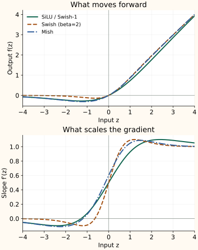

SiLU, Swish, and Mish: Smooth Self-Gating
GELU weights an input using a Gaussian CDF. SiLU uses sigmoid. In both cases, the input determines its own weight, which is why this pattern is called self-gating.
SiLU multiplies an input by its sigmoid
For a large positive input, the sigmoid is close to one, so the input largely passes through. A moderately negative input receives a smaller positive weight and remains negative. Very negative inputs approach zero from below.
SiLU means sigmoid linear unit. Swish describes the family with an extra scale $\beta$:
SiLU is Swish with $\beta=1$. For $\beta\geq0$, increasing $\beta$ sharpens the transition. At $\beta=0$ the function is $z/2$; as $\beta$ grows without bound, the outputs approach ReLU. The Swish paper studies this family, including fixed and learned choices.
The sigmoid weight also changes
Use the product rule on $z\,\sigma(\beta z)$. Differentiating the input gives the sigmoid term. Differentiating the sigmoid contributes its derivative and a factor $\beta$ from the chain rule:
For SiLU, set $\beta=1$. Keeping only $\sigma(z)$ would miss the change in the weight. The full derivative can be negative in part of the negative region and slightly exceed one elsewhere.
Mish changes the smooth weight
Mish uses Softplus followed by tanh to create its weight:
Softplus is $\log(1+e^z)$. It is positive, so its tanh lies between zero and one. Multiplication by $z$ gives another smooth curve with a negative dip and a positive side approaching the identity. This construction is introduced in the Mish paper.
To read its derivative, temporarily call the weight $t=\tanh(\operatorname{Softplus}(z))$. Softplus has derivative $\sigma(z)$, so the product and chain rules give:
| Function | −1 | 0 | 1 |
|---|---|---|---|
| SiLU / Swish-1 | -0.2689 | 0.0000 | 0.7311 |
| Mish | -0.3034 | 0.0000 | 0.8651 |


Check computation as well as shape
Use stable sigmoid and Softplus primitives. Mish introduces a Softplus and tanh; SiLU needs a sigmoid and multiplication. Actual speed depends on available fused kernels, precision, tensor sizes, and hardware, so operation counts alone are not a timing result.
All three are hidden-feature transformations. Their outputs are not probabilities and need not lie between zero and one. A smooth non-monotonic curve is a design choice to test, not a guarantee of better accuracy.
Next, SwiGLU uses SiLU on one learned branch to modulate a separate learned branch.